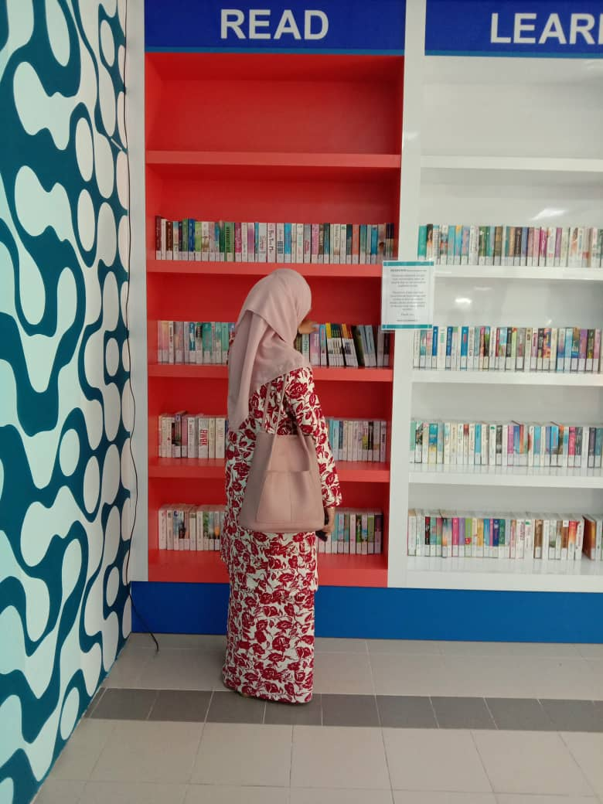
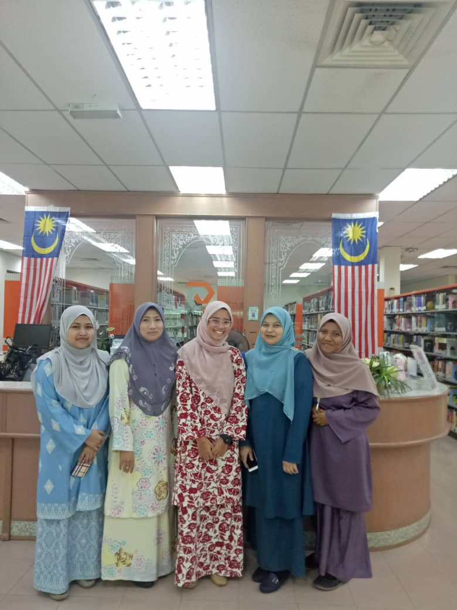
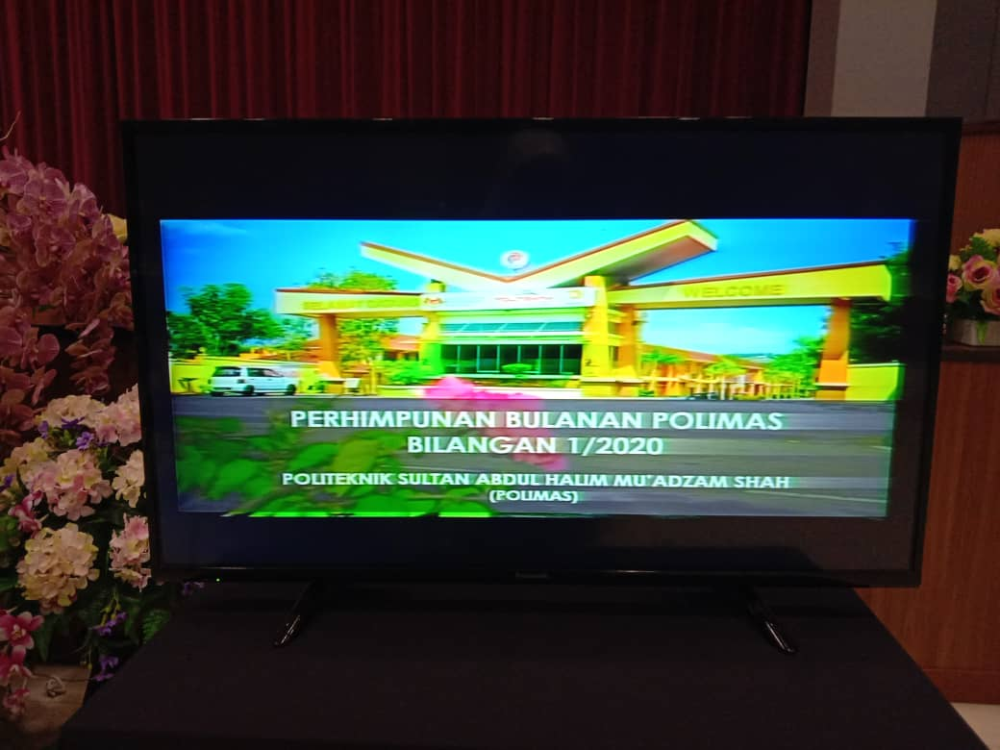
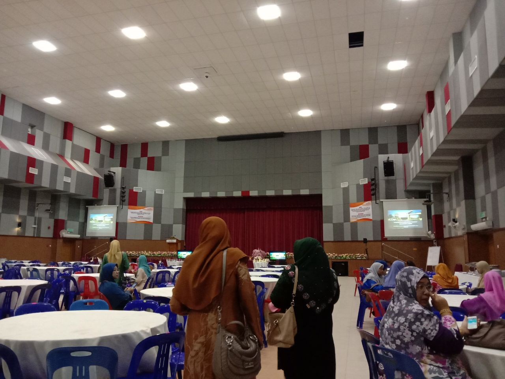
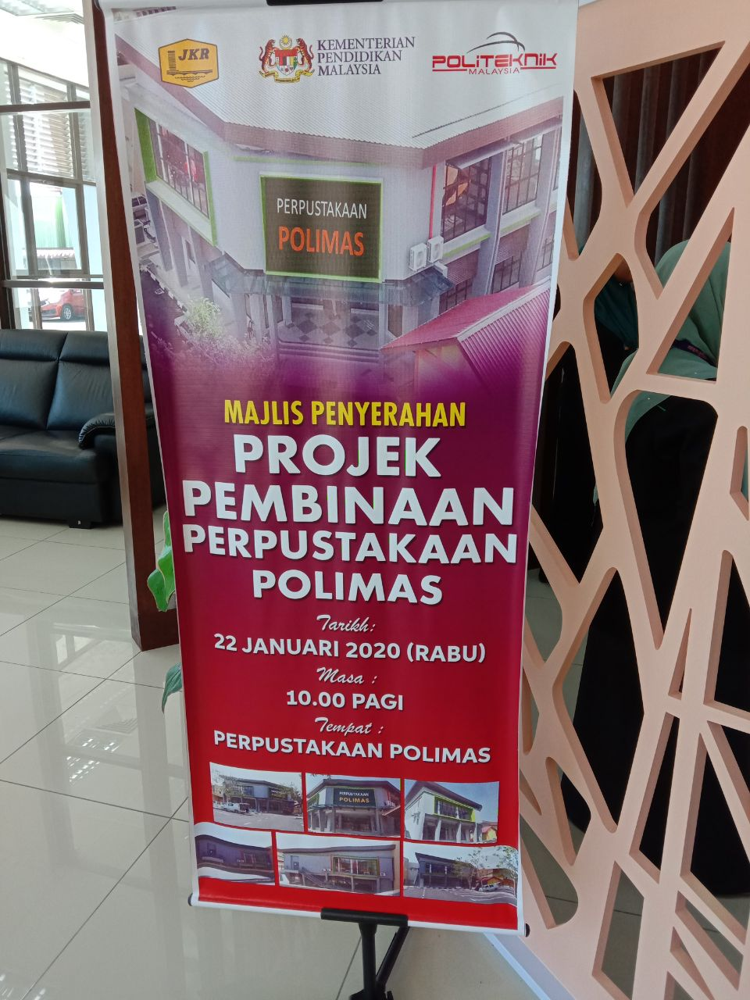
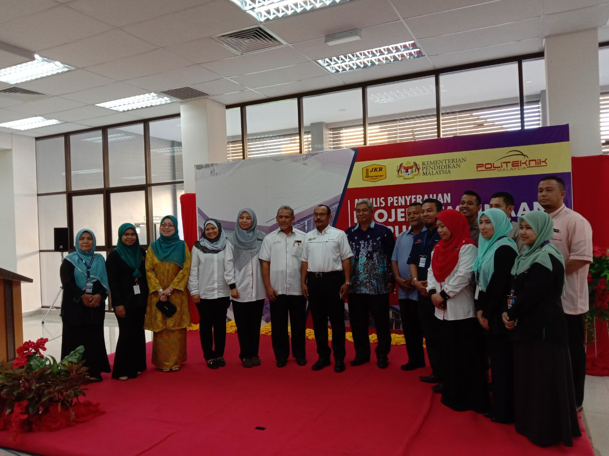
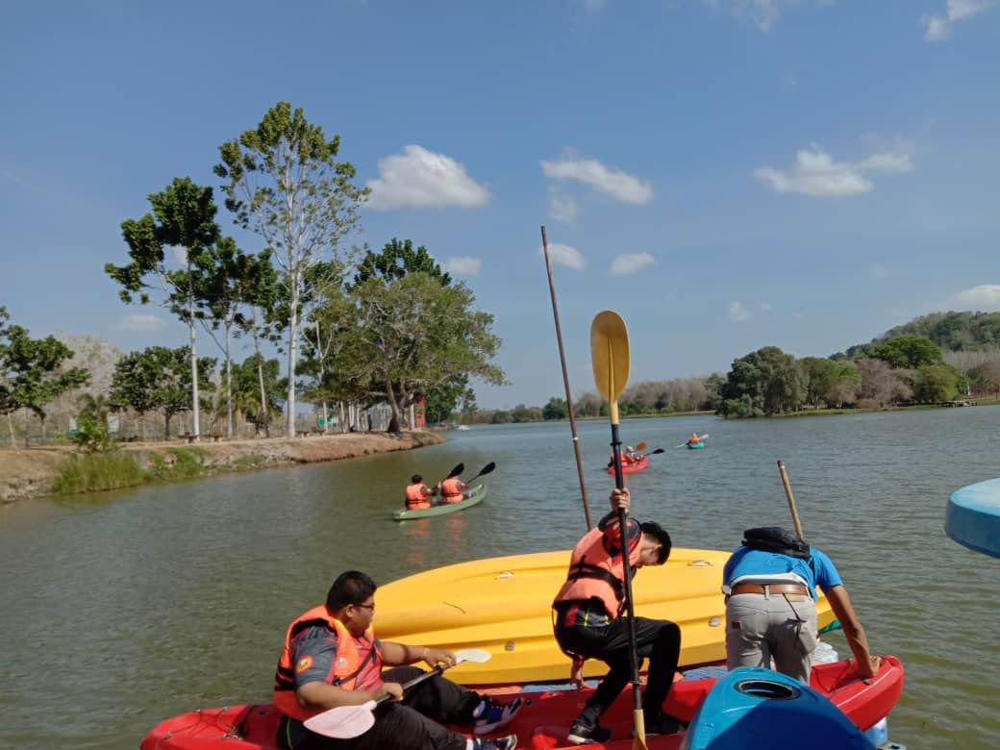
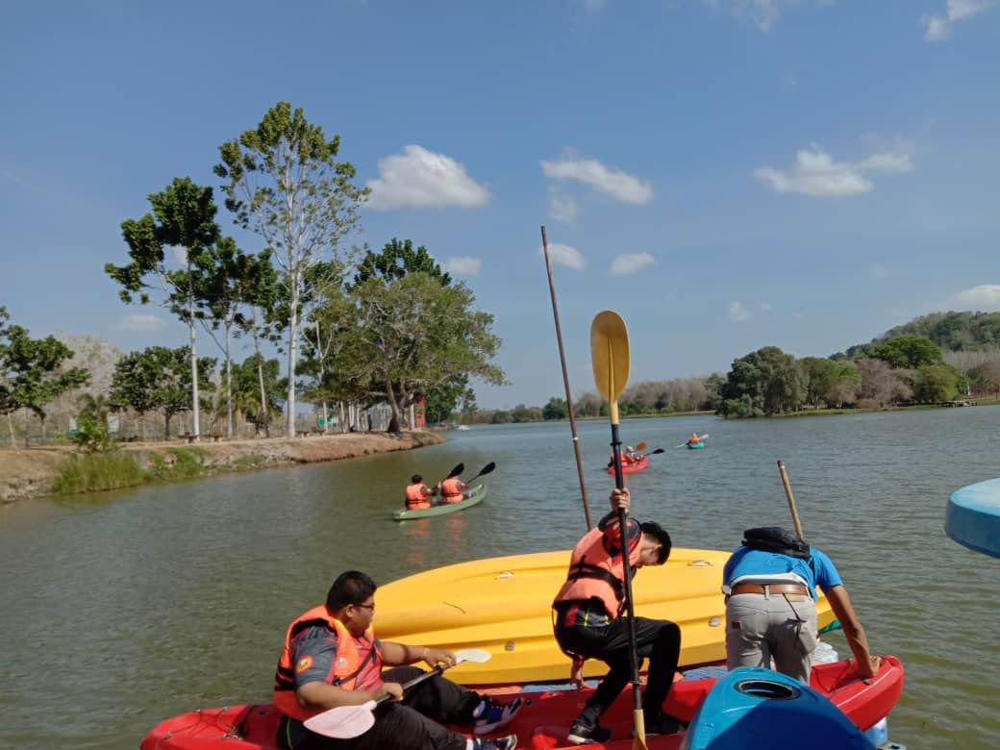

My Experience : My Story
Practical During My Diploma
     
For your information, I have a job experience in my live.
During my Diploma, for the last semester which is semester four, I'm doing my practical
at Politeknik Sultan Abdul Halim Muadzham Shah, Jitra, Kedah Darul Aman
for 3 months as a student practical and also a librarian. There are a lot of things that
I have get through my practical
which is the job description as a librarian, how to organise the
materials in the library and others. Furthermore, during my practical, I also participate several
events. For example, "Projek Pembinaan Perpustakaan POLIMAS", "Jungle Traking with members
of Library Club" and others. I also doing a job as photographer in some events that related with
the library, as a fasilitators, and others. Besides that, I also can doing a works in different
department in the library. There are a lot of knowledge and I also can add my experience as a librarian
in my life. It is a sweet memory and I always miss it.


 
